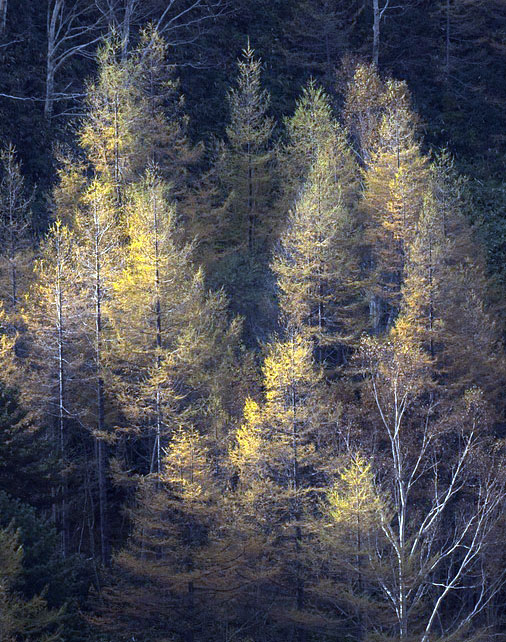
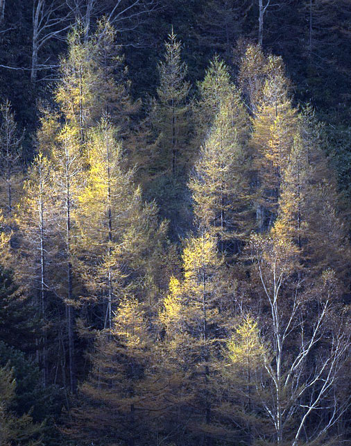
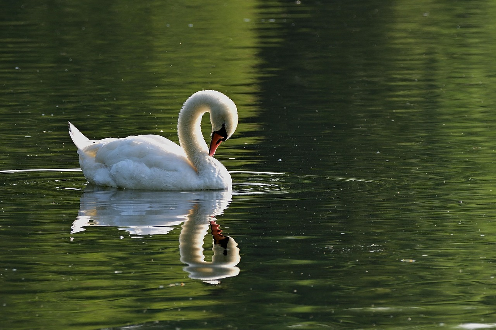
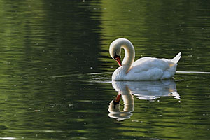
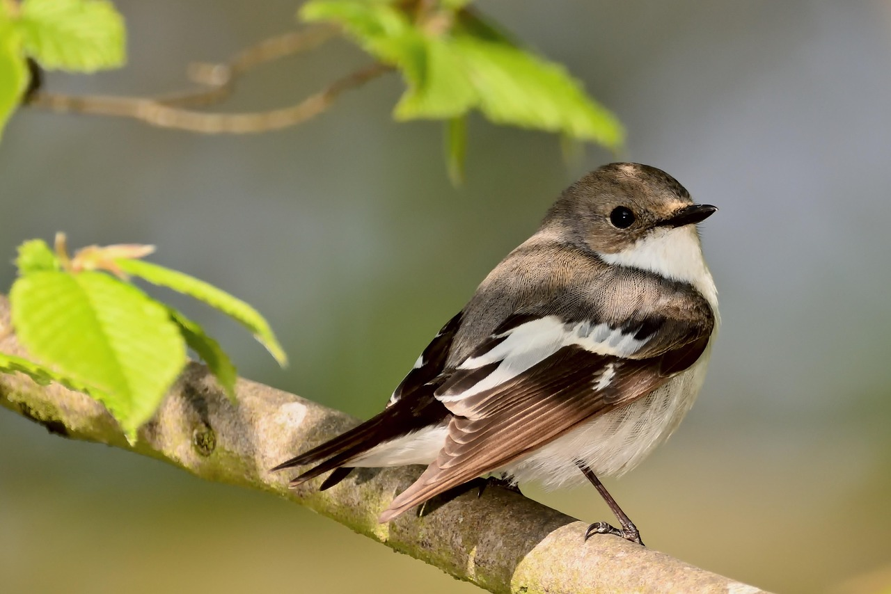
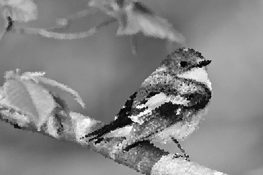
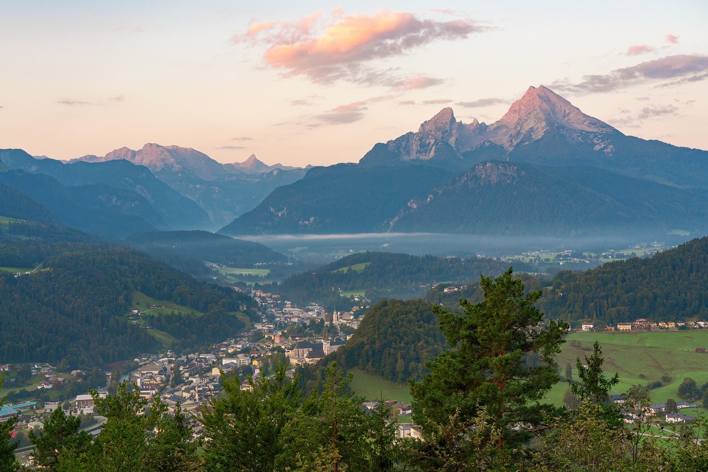
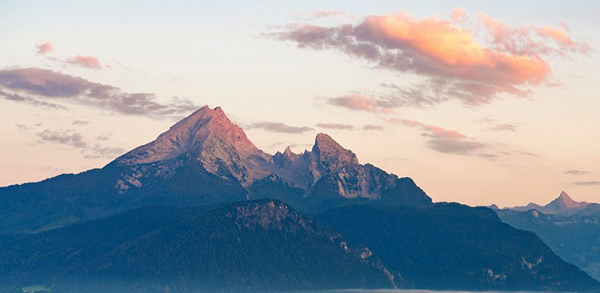
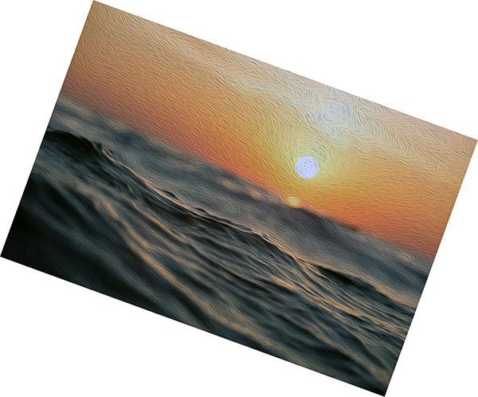
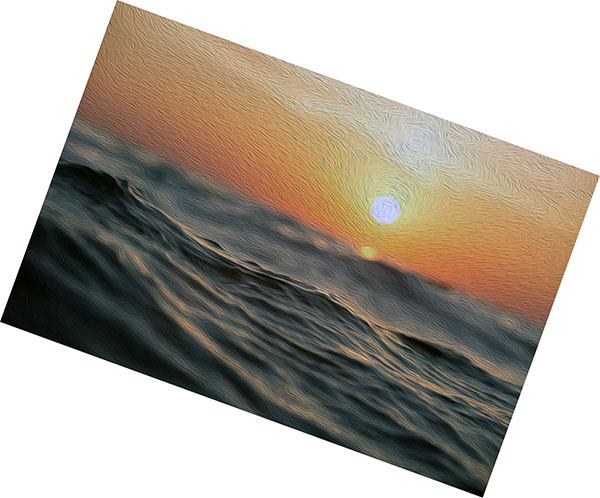

Editing Images
Photoshop
Image 1
 

In this edited image I used auto tone, cropped the image, and resized it.
Image 2
 In this edited image I flipped the image and also resized it.
Image 3
 In the edited image I changed the colors to black and white and added a pixelated filter. I also resized the image.
Image 4
 In the edited image I used auto contrast, flipped the image, and cropped out everything except the mountains.
Image 5
 

In the edited image I used the oil painting filter, rotated the image 20 degrees, and resized it.